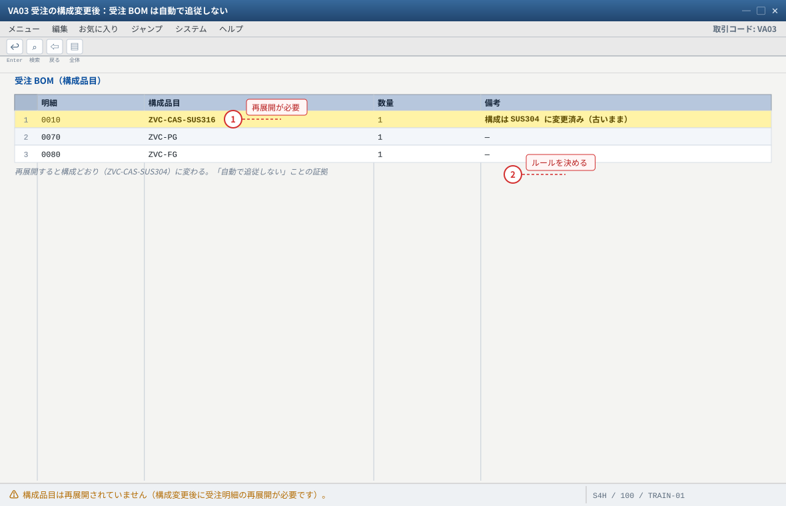
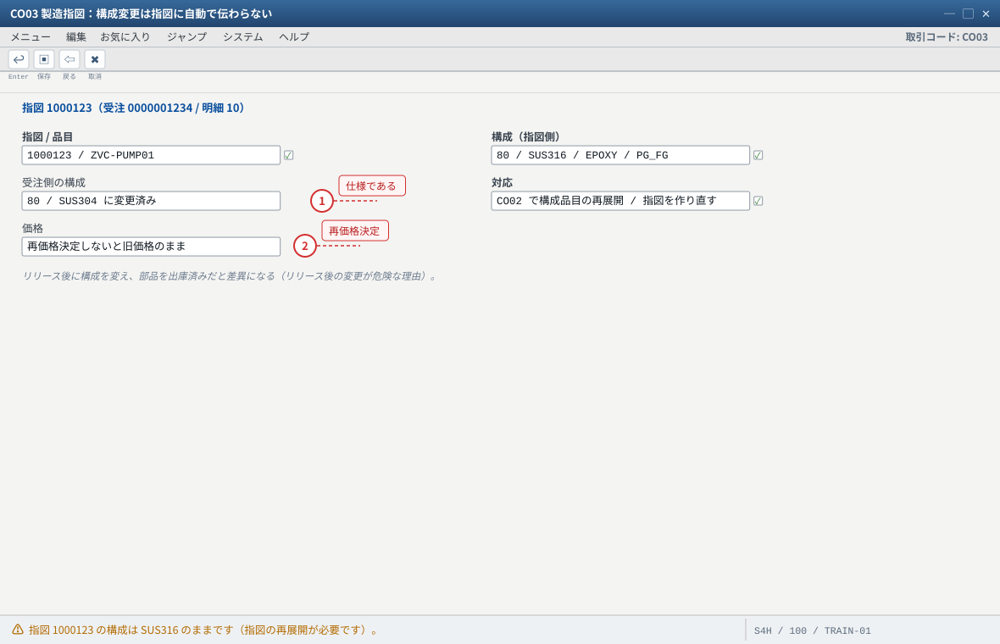
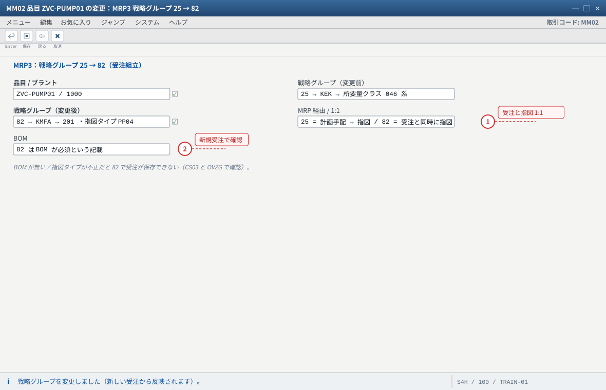
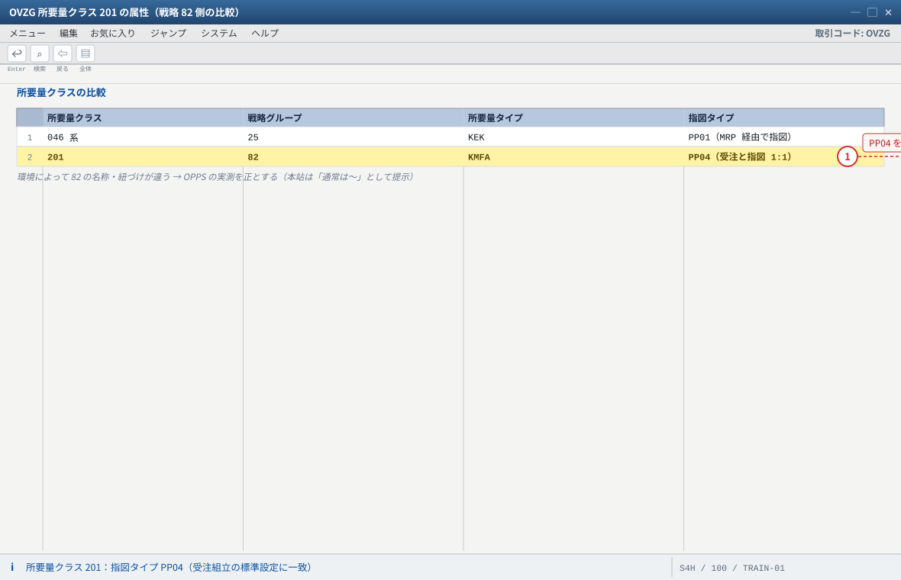
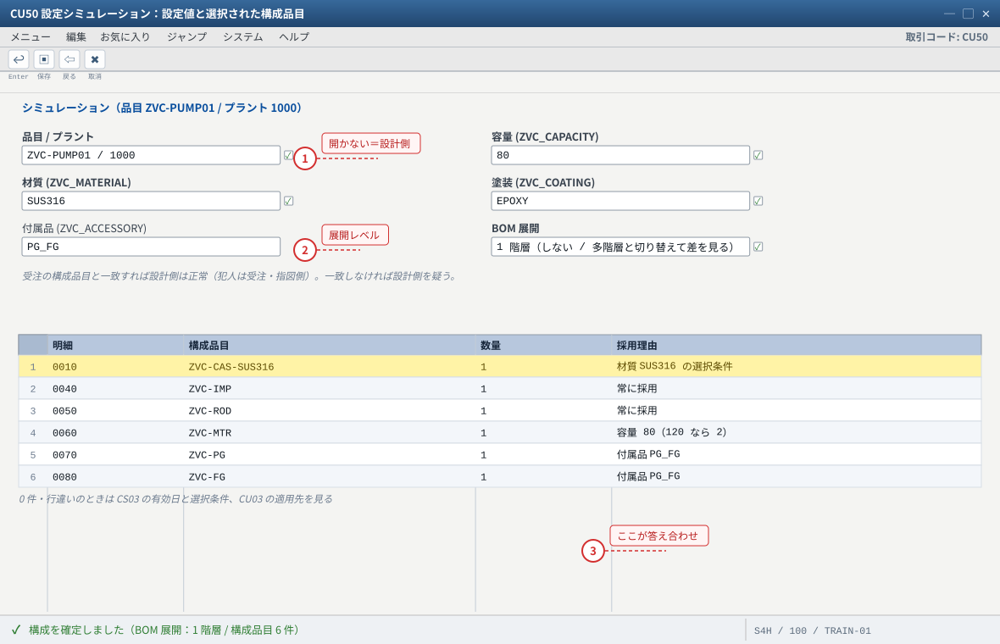
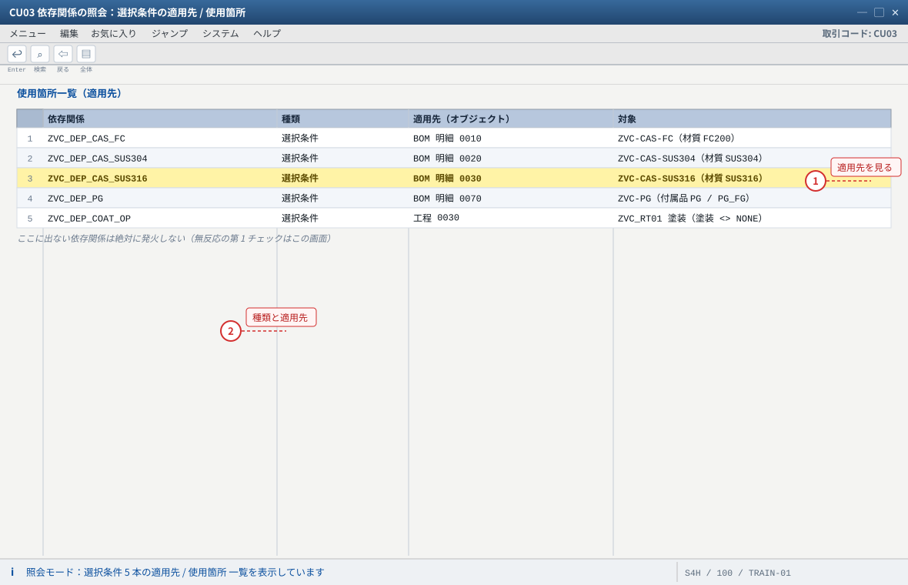
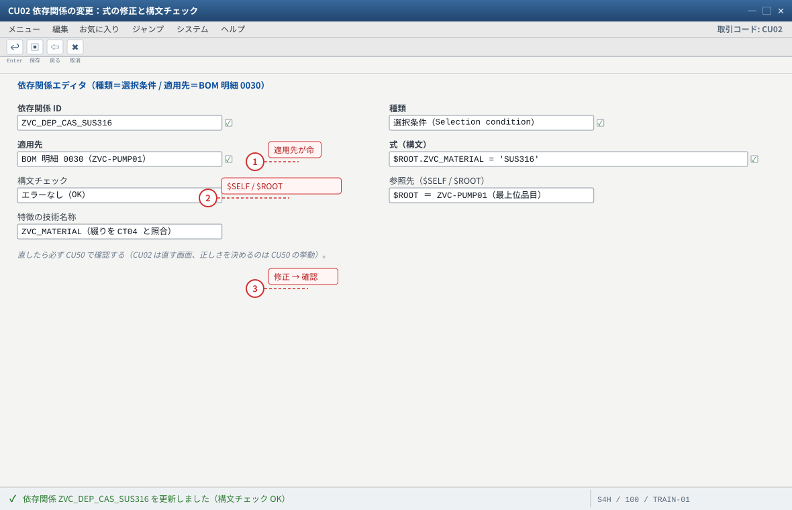
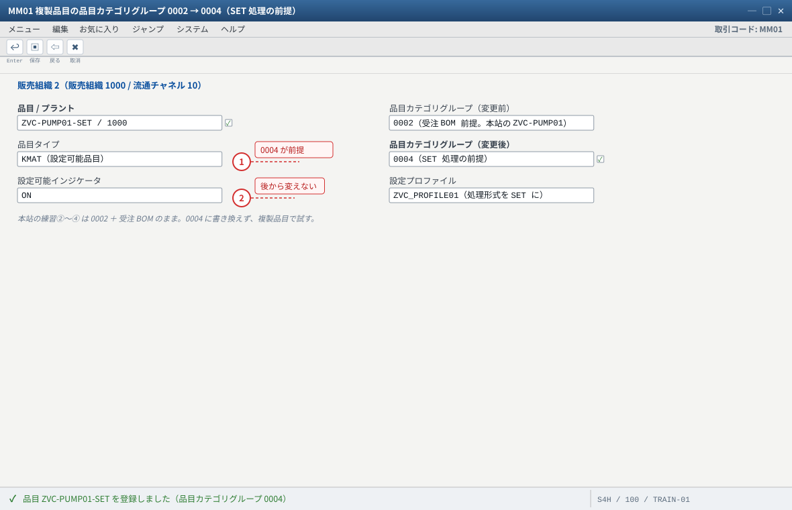
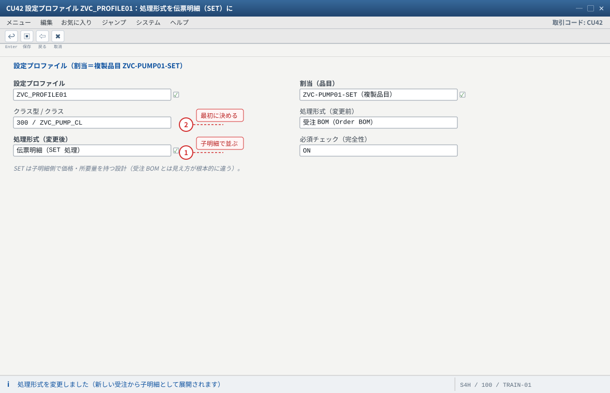

练习⑤ 発展（戦略 82・変更統制）と故障対応
.png 放进 assets/gui/ 后执行 python3 tools/swap_gui_images.py <site> --apply 即可一键替换。82（受注組立・KMFA/201/PP04）に切り替えて受注と指図が 1:1 になる動きを見ます。最後に12 項の故障対照表で、症状から原因を引けるようにします。预计 90 分钟。本练习的重点不是「作る」而是「読む」：
CU50（再現）/ CU03（適用先の照会）/ CU02（式の変更）の 3 画面を使いこなせれば、VC の故障は自分で直せます。受注後の変更
受注組立 1:1
CU50/CU03/CU02
12 項
材料バリアント等
5-1 変更統制：受注後に構成を変えたら何が起きるか
業務では必ず起きます。「客先が材質を SUS316 から SUS304 に変えたいと言ってきた」。このときシステムは自動では追従しません——ここを理解していないと現場が壊れます。
| 変更するもの | 受注（VA02） | 受注 BOM | 所要量/MRP | 製造指図 | 価格 |
|---|---|---|---|---|---|
| 特徴値（構成） | 再構成が必要（VA02 → 構成 → 値変更） | 再展開しないと古いまま | 再 MRP が必要 | 自動では変わらない（指図の再展開が必要） | 再価格決定しないと旧価格のまま |
| 数量 | 明細数量の変更 | — | 所要量が変わる | 指図数量の調整が必要 | 再価格決定 |
| 納期 | 納入日程行の変更 | — | 再 MRP（所要日が変わる） | 指図の基本日付の再計算 | — |
- 练习④ で作った受注を
VA02で開き、構成をSUS316→SUS304に変更して保存する。 - 明細の「構成品目（受注 BOM）」を確認 → ケーシングが変わっていない（再展開していないため）ことを確認。ここが「自動で追従しない」証拠。
- 受注明細で再展開（構成品目の再展開）を実行 → ケーシングが
ZVC-CAS-SUS304に変わることを確認。 CO03で既存の製造指図を確認 → 指図の構成はSUS316のままであることを確認。- 指図側で「構成品目の再展開」（
CO02の機能）を実行するか、指図を作り直す運用にするかを決める。 - 価格：
VA02→ 条件画面 → 更新（再価格決定）→VA00の金額がSUS304の条件レコードに変わることを確認。
② 指図リリース後は構成変更禁止（業務ルール）＝ 現場は安定。ただし「本当に必要な変更」への例外処理を決めておかないと闇運用になる。
③ 構成変更時は受注を作り直す（取消→再受注）＝ 会計・所要量の一貫性は最も高いが、手間とリードタイムのコストが大きい。
おすすめは「リリース前は①、リリース後は②＋例外は③」。どの案でもルールを文書化して、誰が承認するかを決めるのが本質です（システムは統制してくれません）。

- 1 構成を変えても受注 BOM は古いまま＝再展開が必要（システムは統制してくれない）
- 2 変更統制は「リリース前は再展開、リリース後は禁止＋例外」のルール設計が本質
自システムでの確認：VA02 で構成値を変更 → 明細の構成品目が変わっていないことを確認 → 受注明細の再展開（構成品目の再展開）で変わることを確認。

- 1 「受注で材質を変えたのに指図が古い」は仕様（再展開の運用設計が必要）
- 2 条件は受注にコピーされているため、条件レコードを直しても既存受注の金額は変わらない
自システムでの確認：CO03 の構成が SUS316 のままであること、CO02 の「構成品目の再展開」または指図の作り直しのどちらで運用するかを決める。
5-2 戦略 82（受注組立）への切替 — 受注と指図が 1:1
VC を MTO ではなく受注組立（Assemble-to-Order）に乗せ替えます。切り替わるのは受注と指図の関係です。
| 観点 | 戦略 25（练习①〜④） | 戦略 82（本节） |
|---|---|---|
| 所要量タイプ / 所要量クラス | KEK / 046 系 | KMFA / 201（指図タイプ PP04） |
| 受注と指図の関係 | MRP 経由（計画手配 → 指図） | 1:1（受注保存と同時に指図が作られる） |
| BOM | スーパー BOM から選択条件で絞る | 同じ（ただし BOM が必須という記載） |
| 向いている場面 | 納期に余裕のある受注生産品 | 短納期・組立型（在庫部品を組み合わせる） |
OPPSで戦略グループ82を照会し、所要量タイプKMFAと紐づく計画方針を確認。OVZGで所要量クラス201の属性（受注在庫・指図タイプPP04）を確認。- 品目
ZVC-PUMP01の MRP3 戦略グループを25→82に変更（MM02）。この変更は以降の新規受注にだけ効く（既存受注は元のまま）。 - 新しい受注を
VA01で作成（構成を入れて保存）。 - 保存後すぐに
COOISまたはCO03で製造指図が作られているかを確認（戦略82の動き）。 MD04で受注と指図の関係を確認（指図が受注明細に 1:1 で紐づく）。- 確認後、戦略グループを
25に戻す（元に戻せることを確認するのが大事）。
OVZG の 201 が指図タイプ PP04 を持つ（SAP Help の組立処理の標準設定に一致）。
② 受注保存時に指図が自動作成される（戦略 25 との決定的な違い）。③ 指図に構成が引き継がれる。201 の設定（「BOM 必須」が効いています）。
② 戦略 25 で作った既存受注に期待してしまう → 変更は新規受注にだけ効く。
③ 環境によって 82 の名称・紐づけが違う → OPPS の実測を正とする（本站は「通常は〜」として提示）。25 と 82 を同じ品目で切り替えて受注を 2 本作り、MD04 と指図の作られ方の違いを表にせよ。どちらの商売にどちらが合うか、理由つきで書くこと。
- 1 82 に切り替えると受注保存と同時に指図が作られる（25 との決定的な違い）
- 2 既存受注には効かない（新規受注で確認する）
自システムでの確認：MM03 の MRP3。変更は新規受注にだけ効き、既存受注は元のままであることを VA03 / CO03 で確認。確認後は 25 に戻す。

- 1 指図タイプ PP04 が受注組立の鍵（自動作成されないなら BOM 未整備・指図タイプ設定を疑う）
自システムでの確認：OVZG の 201（指図タイプ PP04）、OPPS / OPPJ の 82 → KMFA、受注保存後に COOIS / CO03 で指図が自動作成されているか、MD04 で受注と指図が 1:1 か。
5-3 故障対応の 3 画面（CU50 / CU03 / CU02 の読み方）
| 画面 | 何に使うか | 読むポイント |
|---|---|---|
CU50シミュレーション | 受注に触らずに構成を再現する（最強の切り分けツール） | ① 設定画面が出るか（＝ 5 条件・プロファイル）② 値が選べるか（＝前提条件）③ BOM 展開の結果（＝選択条件）④ 展開レベルを変えた差 |
CU03依存関係の照会 | 「この依存関係がどこに貼られているか」を見る | 適用先／使用箇所一覧。ここに出ない依存関係は絶対に発火しない——無反応の第一チェック |
CU02依存関係の変更 | 式を直して即 CU50 で確認する（修正→確認のループ） | 構文チェックの結果、$SELF/$ROOT の対象、特徴の技術名称の綴り |
故障切り分けの型（この順にやれば最短）
① CU50 で同じ構成を再現できるか
できる → 受注/指図側の問題（明細カテゴリ・指図の作り方・再展開漏れ）
できない → 設計側の問題（下へ）
② CU50 で設定画面が出ない → 品目 5 条件（MM03）・設定プロファイル（CU43）
③ 値が選べない/選べすぎる → 前提条件（CU03 の適用先）
④ BOM が変わらない → 選択条件（CS03）・有効日・展開指定
⑤ 工程が変わらない → 工程側の選択条件（CA03）
⑥ 数量・標準値が想定と違う → 手続きの適用先・実行順・再展開
⑦ 価格が加算されない → 追加データ（CT04）→ 条件タイプ(V/06) → 手続(V/08) → 条件レコード(VK13)
OR 漏れ／プロファイルの処理形式違い のいずれか）を、上記の型で切り分けて原因を特定せよ。使った手順を時系列で記録すること。
- 1 設定画面が出る＝品目の 5 条件（MM03）とプロファイル割当（CU43）が揃っている証拠
- 2 展開レベルを切り替えて差を見る（「部品が出ない」の 2 箇所目はここ）
- 3 構成品目は選択条件（CU03 で適用先を確認）が効いた結果。受注の構成品目と突き合わせる
自システムでの確認：CU50 の BOM 展開を しない / 1 階層 / 多階層 で切り替えて結果を比較し、受注 0000001234 の構成品目と一致するかを見る。

- 1 適用先が BOM 明細になっていること＝BOM が変わる。特徴値に貼ると無反応（症状は同じ）
- 2 選択条件は BOM 明細・工程、前提条件は特徴値に貼る（種類と適用先の組合せを覚える）
自システムでの確認：CU03 で依存関係を 1 本ずつ選び、適用先 / 使用箇所一覧に BOM 明細と工程が出るか（出ない依存関係は無反応の原因）。

- 1 適用先違いが無反応の第 1 位（特徴に選択条件を貼る等）。式より先に適用先を見る
- 2 $SELF と $ROOT の取り違えは症状が全く同じ「無反応」→ 参照先を意識する
- 3 直したら同じ依存関係を CU50 で即確認（部品が 1 行変わるか）
自システムでの確認：CU02 で式を直して保存 → CU50 の構成品目が 1 行変わるかを確認（正しさを決めるのは CU50 の挙動）。
5-4 故障対照表（12 項・症状から引く）
| # | 症状 | 根因（第一嫌疑） | 確認手顺 |
|---|---|---|---|
| 1 | 受注で構成画面が出ない／構成ボタンがグレー | 品目が設定可能でない（設定可能インジケータ OFF・品目タイプが KMAT でない）／設定プロファイル未割当／品目カテゴリグループが 0002 でない | MM03 基本データ1 → CU43 の割当 → MM03 販売組織2 → VOV4 |
| 2 | 設定したのに受注の構成品目（部品）が変わらない | 選択条件の適用先違い／$ROOT と特徴名の不一致／BOM の有効日／BOM 展開レベル | CU50 で再現 → CS03 の選択条件 → CU03 の使用箇所 → 有効日 |
| 3 | 「受注在庫に割当できません」エラー／在庫区分が E にならない | MRP4 の個別/包括所要量が未設定／所要量クラスの在庫区分が受注在庫でない／戦略グループ未設定 | MM03 MRP4 → OVZG（所要量クラス）→ MM03 MRP3（戦略 25） |
| 4 | 製造指図に設定値が反映されない | 指図を受注明細参照で作っていない／指図作成後の再展開漏れ | CO03 の構成 → 指図ヘッダの受注明細参照 → CO02 の再展開機能 |
| 5 | 変種価格（加算）が出ない／金額 0 | 特徴の追加データ未設定（VKOND が空）／条件タイプ VA00 が計算手続に無い／条件レコードのキー不一致 | VA03 条件画面 → V/08 → VK13 → CT04 追加データ（SE11 で構造確認） |
| 6 | 必須項目なのにチェックされない | クラス側の「必須」フラグ OFF／設定プロファイルの必須・完全性チェック OFF | CL03 の必須列 → CU43 のチェック設定 → CU50 の挙動 |
| 7 | 依存関係を作ったのに何も起きない | 適用先違い（特徴に選択条件を貼った等）／$SELF と $ROOT の取り違え／複数値特徴の判定 | CU03 の「適用先/使用箇所」→ CU02 で式を修正 → CU50 で再確認 |
| 8 | 工程（作業手順）が設定値で消えない／出ない | 工程への選択条件の貼り忘れ／作業手順の有効日・作業手順グループ／指図作成時の再評価 | CA03 の工程と選択条件 → CA02 で有効日 → CO03 の工程 |
| 9 | 所要量が MD04 に出ない | 納入日程行カテゴリの所要量転送 OFF／戦略グループ未設定／納期が過去 | VA03 納入日程行カテゴリ → VOV6/VOV5 → MM03 MRP3 |
| 10 | 受注後に構成を変えたら製造が混乱した | 変更統制の欠如（再展開の運用ルールが無い）／リリース後の変更 | 5-1 の表で影響範囲を確認 → 運用ルールの設計（練習課題） |
| 11 | 在庫が見えない／在庫を持てない | KMAT は原則として在庫管理されない（仕様）／受注在庫（E）の評価設計 | MMBE の構造を理解 → 材料バリアントや別品目の設計を検討（発展課題） |
| 12 | 数量・標準時間が設定値どおりにならない | 手続きの実行順／項目名の誤り／指図作成時の再展開で上書き | CU50 で数量・標準値を確認 → BOM 明細/工程の手続き適用先 → 結合方式（行を分ける方式）への切替 |
| 13 | AVC 環境で AVC の画面（特徴グループ）が出ない／CU41 で作ったものが見えない | モデリング環境の混在（LO-VC と AVC の二重管理）／スコープアイテム未活性 | PMEVC の起動可否 → 設定プロファイルの所在（CU43 と PMEVC）→ Cloud はスコープアイテム（IYT/7DM）を確認 |
| 14 | 受注の構成が「不完全」で保存できない | 必須特徴の未入力／構成を確定せずに保存 | 構成画面で未入力の必須特徴を特定（CL03 の必須列と照合）→ 構成を確定してから保存 |
CU03 と MM03 を最初に見る習慣をつけてください。5-5 発展課題（時間の余裕に応じて 2 つ以上）
| # | 課題 | 学べること | ヒント（T-code） |
|---|---|---|---|
| 1 | 材料バリアントを作る：よく売れる構成（例：容量 80・SUS316・EPOXY・PG）を固い品目番号として登録し、受注時に品目が差し替わる動きを見る | 見込生産と受注生産のハイブリッド設計 | 構成画面の「材料バリアント作成」系機能／S/4HANA の切替 VCHMOVMVAR（機能の所在は環境で確認） |
| 2 | SET 処理を試す：設定可能品目の品目カテゴリグループを 0004 にした複製品目で、構成品目が子明細として並ぶ動きを見る | 子明細側で価格・所要量を持つ設計 | MM01（0004）＋設定プロファイルの処理形式を「伝票明細（SET）」に。varconf の記載参照 |
| 3 | 多階層 BOM：ケーシングを HALB（半製品）にして下位に構成を持たせ、多階層展開で選択条件がどう効くかを見る | BOM 階層と $ROOT/$PARENT の関係 | CS01（半製品側）→ CS12/CS13（多階層照会） |
| 4 | 制約（Constraints）の概念を学ぶ（AVC）：手続きではなく宣言的な整合性ルールで組合せを制限する | AVC の設計思想（手続き疲れからの脱却） | 制約ネット系（CU21 〜 CU23 系）※バージョンで名称が異なる |
| 5 | AVC の特徴グループで設定画面を設計する（画面に並べる順序・グループ化） | 設定 UI の設計（営業が使える画面にする） | PMEVC（特徴グループ） |
| 6 | 依存関係の引用（Reference）で共通ロジックを再利用する（同じ式を 5 か所にコピペしない） | 保守性の設計（変更点を 1 か所にする） | CU01 の「引用」機能（画面の所在は環境で確認） |
| 7 | 翻訳・言語依存：特徴の名称を日本語/英語/中国語で持ち、設定画面が言語で変わることを確認 | グローバル展開の実務 | CT04 の「言語」／SE63 系 |
| 8 | レポート/抽出：受注の構成値（VKOND・特徴値）を一覧にする（AUSP/CUOBJ の理解） | 「構成値がどこにあるか」を data として理解 | VA03 → 構成 → SE16N AUSP（項目名は SE11 で確認） |

- 1 0004 は子明細（SET）の前提。親明細は情報のみで価格・所要量は子明細側に移る
- 2 処理形式は受注を流す前に固める（既存受注がある状態で変えると壊れる）
自システムでの確認：MM03 販売組織 2 で品目カテゴリグループを確認 → プロファイルを SET にして受注を流し、構成品目が子明細として並ぶかを見る。

- 1 SET にすると構成品目が受注の子明細として並ぶ（価格は子明細側に付く）
- 2 処理形式は「BOM をどこに置くか」の設計判断。受注を流す前に固める
自システムでの確認：CU43 で処理形式を照会 → 受注（VA01）で構成品目が子明細として並ぶか、価格が子明細側に付くかを確認（varconf の記載）。
5-6 本练习的期待结果汇总
| # | 成果物 | 期待值 | 証跡 |
|---|---|---|---|
| 1 | 変更統制の理解 | 受注の構成変更 → 受注 BOM・指図・価格が自動で追従しないことを実機で確認 | 変更前後の VA03/CO03 の記録 |
| 2 | 戦略 82 | 受注保存で指図が 1:1 に作られることを確認し、25 に戻した | OPPS/OVZG／CO03 |
| 3 | 3 画面の使い方 | CU50/CU03/CU02 の役割を説明でき、故障を切り分けられる | 切り分けの手順記録 |
| 4 | 故障対照表 | 14 項のうち 5 項以上を、手顺を見ずに原因まで言える | シート D の故障記録 |
| 5 | 発展課題 | 2 つ以上を実施（材料バリアント／SET／多階層／制約／特徴グループなど） | 実施記録（画面 or メモ） |
5-7 つまずきと対処（発展編）
| 症状 | 原因の第一嫌疑 | 确认手顺 |
|---|---|---|
| 材料バリアント作成後、受注で品目が置き換わらない | 構成値が材料バリアントと完全一致していない／置換の設定 | 構成画面の材料バリアント機能／品目の分類と特徴値の一致を確認 |
| SET 処理にしたら価格が合わない | 価格が子明細側に移った（親明細は情報のみ） | 受注の条件画面で「どの明細に条件が付いているか」を確認 |
| 多階層で選択条件が効かない | $ROOT と $PARENT の参照先の違い | CS03 の選択条件画面 → CU50 で多階層展開して確認 |
| 制約／特徴グループの画面が見つからない | AVC の機能（LO-VC には無い）／権限 | PMEVC の起動 → リリース・ライセンスの確認（C0 に戻る） |
戦略 82 にしたら受注が保存できない | BOM が無い／指図タイプが不正（82 は BOM 必須） | CS03 で BOM の有無 → OVZG／指図タイプの設定 |
5-8 验收（完成基准）
- 受注の構成を変更し、受注 BOM・製造指図・価格が自動で追従しないことを実機で確認した（
VA03/CO03） - 再展開（受注明細／指図）の手順を実際に実行し、結果の変化を確認した
- 変更統制のルール案（① 承認者 ② 許容範囲 ③ 例外手順 ④ 記録）を書いた
- 戦略グループを
82に切り替え、受注と指図が 1:1 になることを確認し、25に戻した OPPS/OVZGで82/KMFA/201/PP04の紐づけを自分の目で確認したCU50/CU03/CU02の役割の違いを説明できる- 故障対照表のうち 5 項以上を、確認手顺を見ずに切り分けの型で説明できる
- 故意に壊したモデルの原因を特定できた（切り分けの記録を提出）
- 発展課題を 2 つ以上実施し、実施内容と気づきを記録した
- シート D 故障記録に、症状→根因→証拠→処置→再発防止を 1 件以上記入した